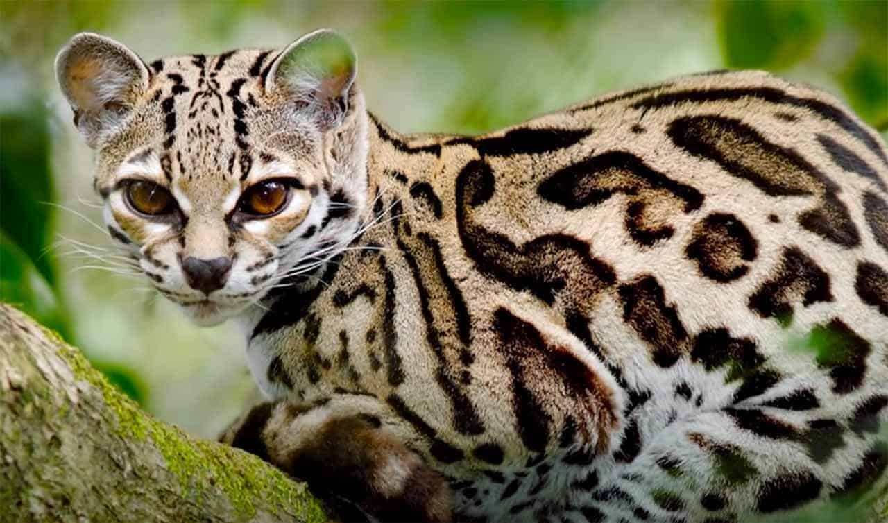

| ANIMAL | CARACTERISTICA | ALIMENTAÇÃO | imagem |
|---|---|---|---|
| Gato do mato | O corpo mede entre 40 a 55 cm, a cauda varia entre 25 a 40 cm, pesando em média de 1 a 3,5 kg. Animal de pequeno porte, de coloração amarela a castanha, com fileiras de manchas oceladas negras, as quais, no dorso, tendem a formar anéis algumas vezes abertos. | Alimentam-se de pequenos mamíferos, aves, lagartos e anfíbios. |  |